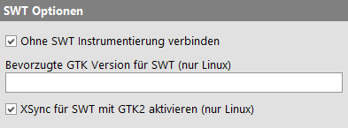

| Version 6.0.3 |
Die folgenden Optionen sind speziell für das Testen von SWT Anwendungen von Bedeutung.
|
|  | ||
|
| Abbildung 37.32: SWT Optionen | ||
Ist diese Option aktiviert, müssen SWT Anwendungen (bis auf ältere SWT Versionen unter Linux) nicht instrumentiert werden. Detaillierte technische Informationen hierzu finden Sie in Abschnitt 43.2.
Unter Linux können Eclipse/SWT Anwendungen der SWT Versionen 4.3 bis 4.9 wahlweise mit GTK2 oder GTK3 ausgeführt werden. Diese Option kann auf "2" oder "3" gesetzt werden, um eine spezifische GTK Version zu erzwingen oder leer gelassen werden, um den zur jeweiligen SWT Version passenden Standard zu verwenden.
SWT Anwendungen mit GTK2 werden auf neueren Linux Systemen zunehmend instabil und können unter starker Last, welche bei Ausführung mit QF-Test in maximaler Geschwindigkeit nicht ungewöhnlich ist, abstürzen. Solche Fehler können durch Aktivierung von XSync behoben werden, einer X11 spezifischen Option mit der X11 Events synchron verarbeitet werden. Diese kann allerdings die Geschwindigkeit beeinträchtigen. Wenn Sie Ihre SWT Anwendung mit GTK2 betreiben müssen und diese unter QF-Test langsam erscheint, deaktivieren Sie probeweise diese Option um zu sehen, ob die Tests damit schneller werden, ohne dass das SUT gelegentlich abstürzt.
| Letzte Änderung: 6.9.2022 Copyright © 1999-2022 Quality First Software GmbH |